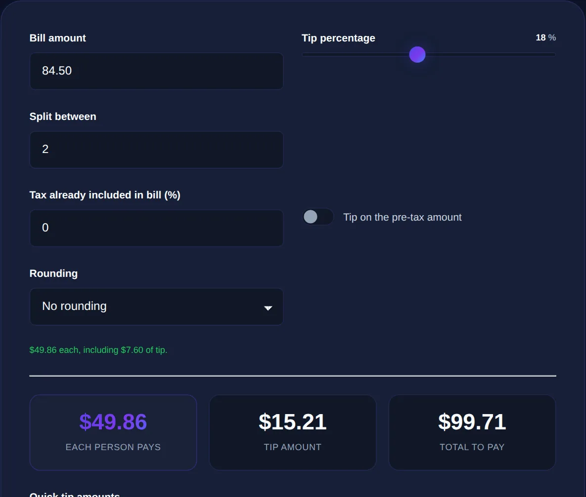

How Much to Tip: A Practical Guide to Splitting the Bill
To tip, multiply the pre-tax total by your chosen percentage (commonly 15 to 20 percent for table service in the US); to split a bill evenly, add the tip to the total and divide by the number of people.
By Mubasher Hussain · Published 2026-07-30 · Updated 2026-10-08 · 1093 words · about 5 minute read
Working out a tip and splitting a bill is quick arithmetic, but doing it at the table, often after a meal and a drink, sometimes in an unfamiliar country, is where people fumble. A tip is a percentage of the bill, and splitting means dividing the total fairly among the group. The Tip Calculator handles both in your browser, and this article covers how tipping percentages work, the mental shortcuts, and how to split a bill without awkwardness.
Tipping customs vary enormously around the world, so the "right" percentage depends on where you are, but the maths of applying and splitting a tip is the same everywhere.
How tipping percentages work
A tip is simply a percentage of the bill added on top. To calculate it, convert the percentage to a decimal and multiply: a 20% tip on a $50 bill is 0.2 × 50 = $10, making the total $60. The percentage you choose depends on local custom and the service, but the calculation never changes. One decision worth noting is whether to tip on the pre-tax or post-tax total; customs differ, and for a modest bill the difference is small, but tipping on the pre-tax amount is a common and defensible choice.

Mental-maths shortcuts for tipping
You can estimate almost any tip quickly by building it from 10%:
- 10%: move the decimal one place: 10% of $46 is $4.60.
- 20%: double the 10% figure: about $9.20.
- 15%: 10% plus half of 10%: roughly $6.90.
- 18%: a little under 20%; take the 20% figure and trim it slightly.
Rounding makes it even easier: work out 10%, then double or halve as needed and round to a convenient figure. Precision to the penny rarely matters for a tip, so a quick estimate is usually fine, and a calculator is there when you want it exact or the numbers are awkward.
In some countries a 15-20% tip is expected; in others service is included and tipping is minimal or even discouraged. When travelling, check local norms rather than assuming, and a currency conversion helps you judge what a tip is really worth.
Splitting the bill evenly
The simplest split is to divide the full total, tip included, equally among everyone. Calculate the bill plus tip, then divide by the number of people. The order matters for fairness: add the tip to the whole bill first, then split, so everyone contributes proportionally to the gratuity. Splitting the bill and the tip separately, or splitting before adding the tip, tends to cause confusion and small shortfalls. An even split is fair when everyone ordered roughly similar amounts and no one minds evening out minor differences.
Splitting by what each person ordered
When orders differ a lot, one person had a steak and wine, another a salad and water, an even split feels unfair, and splitting by item is more equitable. Each person pays for what they ordered, and the tip and any shared items (a bottle of wine, a starter for the table) are divided proportionally or evenly as the group prefers. This is more arithmetic, which is exactly where a calculator helps: it can apportion the tip across individual subtotals so each person's share includes their fair slice of the gratuity. The social key is to agree the method before the bill arrives, so no one feels short-changed.
Calculate the tip and split any bill among any number of people, entirely in your browser.
The maths behind the meal
Tipping and splitting are really just applied percentages and division, so the same skills serve elsewhere. A percentage calculator handles any percentage question, a discount calculator applies the same logic in reverse for sales, and when you are abroad a currency converter tells you what the bill and tip are worth in your home currency. Seeing the shared arithmetic behind all of these makes each one easier.
Handling the awkward moments gracefully
The arithmetic of tipping and splitting is the easy part; the social choreography is what people actually find awkward. A few habits smooth it over. The most effective is to agree the approach before the bill arrives, an even split or paying for your own, so there is no negotiation over a table of finished plates. When splitting evenly, rounding up slightly to a convenient number per person avoids fishing for small change and tends to leave a marginally more generous tip, which no one minds. If one person puts the whole bill on their card for the group to repay, working out each share clearly and sending it promptly keeps things fair and friendly.
Group size changes the dynamics too. Large groups sometimes have a service charge added automatically, so check the bill before adding a tip on top and accidentally paying twice. When people have ordered very differently, quietly splitting by item is kinder than forcing a light eater to subsidise a big spender, but for roughly similar orders an even split is faster and friendlier than itemising every coffee. The underlying goal is fairness without friction: everyone pays a reasonable share, no one feels short-changed, and the maths never sours the end of a good meal. A calculator handles the numbers instantly, which frees you to focus on the etiquette, agreeing the method early, rounding sensibly, and settling up without fuss. Get the social part right and the money part takes care of itself.
Ultimately, tipping and splitting come down to a little applied percentage maths wrapped in a bit of social grace. Decide the percentage from local custom, build it quickly from 10% in your head, add it before dividing so the gratuity is shared fairly, and agree the split method before the bill lands. With those habits, and a calculator for the fiddly cases, the end of a meal stays relaxed rather than turning into an awkward negotiation over who owes what.
To sum up: a tip is a percentage added to the bill, easily estimated by building on 10%, and best applied before splitting so everyone shares the gratuity fairly. Split evenly when orders are similar, or by item when they differ, and agree the method up front to keep things smooth. Local custom decides the percentage; the arithmetic is the same everywhere, and a calculator turns a fumbled after-dinner sum into an instant, fair result.